Tero Karvisen artikkelissa käsitellään Apache-web-palvelimen asentamista Ansiblella. Artikkelissa käydään läpi palvelimen asennuksen ja hallinnan perusperiaatteita. Ansiblella voidaan esimerkiksi asentaa ohjelmistoja, kopioida asetustiedostoja ja varmistaa, että palvelu on käynnissä.
Opin, että palvelimen hallinta voidaan jakaa eri osiin: ohjelmiston asentamiseen, asetusten määrittämiseen ja palvelun käynnistämiseen. Tämä tekee palvelimen käyttöönotosta helpommin toistettavaa.
Ansible-dokumentaation handlers-osiossa käsitellään tehtäviä, jotka suoritetaan vain silloin, kun jokin toinen tehtävä ilmoittaa muutoksesta. Tästä käytetään notify-asetusta.
Esimerkiksi jos Ansible muuttaa Nginxin asetustiedostoa, se voi ilmoittaa handlerille, joka käynnistää Nginxin uudelleen. Handleria ei siis suoriteta turhaan jokaisella playbookin ajokerralla, vaan ainoastaan silloin, kun sitä tarvitaan.
Tutustuin Debianin terminaalissa ansible-doc service -komennolla service-moduulin dokumentaatioon. Moduulilla voidaan hallita Linux-palveluita.
Keskeisiä asetuksia ovat:
name: määrittää hallittavan palvelun nimen.state: määrittää palvelun halutun tilan, esimerkiksi started tai stopped.enabled: määrittää, käynnistyykö palvelu automaattisesti järjestelmän käynnistyessä.Näitä asetuksia käytin myöhemmin Nginxin hallintaan Ansiblella.
y) Hackernews: N-able korjaa 17 N-central-järjestelmän tietoturva-aukkoa
Valitsin The Hacker News -sivustolta 17.11.2026 julkaistun uutisen, joka käsittelee N-ablen N-central-hallintajärjestelmästä löytyneitä tietoturva-aukkoja.
N-central on etähallinta-alusta, jonka avulla IT-ylläpitäjät voivat valvoa ja hallita laitteita etänä.
N-able julkaisi järjestelmälle tietoturvapäivityksen, joka korjaa yhteensä 17 haavoittuvuutta.
Haavoittuvuudet liittyivät muun muassa tunnistautumiseen, käyttöoikeuksiin, tiedostojen käsittelyyn ja palvelimen tietoturvaan.
Aiemmin löydettyjä haavoittuvuuksia oli jo hyödynnetty hyökkäyksissä, joissa haavoittuville palvelimille asennettiin kryptovaluuttojen louhintaohjelmia.
N-able suosittelee päivittämään palvelimet, agentit ja proberatkaisut uusimpiin versioihin, jotta järjestelmät olisivat suojattuja.
Oma huomio: Uutinen havainnollistaa, kuinka tärkeää keskitettyjen hallintajärjestelmien tietoturvasta huolehtiminen on. Niiden avulla voidaan hallita useita laitteita samasta paikasta, mutta samalla järjestelmään kohdistuva hyökkäys voi aiheuttaa ongelmia monille laitteille. Siksi päivityksistä ja käyttöoikeuksista huolehtiminen on tärkeää.
linkki: https://thehackernews.com/2026/11/n-able-patches-17-n-central-flaws-as.html?
Ensimmäisessä tehtävässä asensin Apache-web-palvelimen Debianille. Apache on web-palvelinohjelmisto, jonka avulla voidaan julkaista verkkosivuja selaimella katseltavaksi.
Aloitin asentamalla Apachen paketinhallinnan avulla:
sudo apt update
sudo apt install apache2
apt update päivittää pakettilähteiden tiedot. apt install apache2 asentaa Apache-palvelimen. sudo tarvitaan, koska ohjelmistojen asentaminen vaatii ylläpitäjän oikeudet.
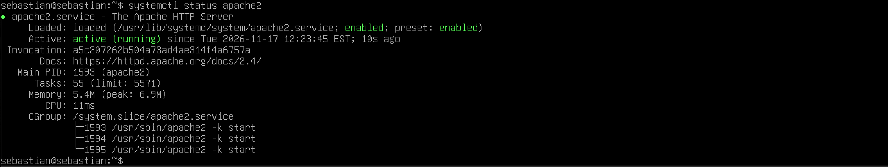
Asennuksen jälkeen tarkistin palvelun tilan:
systemctl status apache2
Komento näyttää, onko Apache käynnissä. Varmistin myös, että palvelin vastasi paikallisesti:
curl http://localhost
Curl-komennolla voidaan tehdä HTTP-pyyntö verkkopalvelimelle. Vastauksena sain verkkosivun HTML-sisällön.
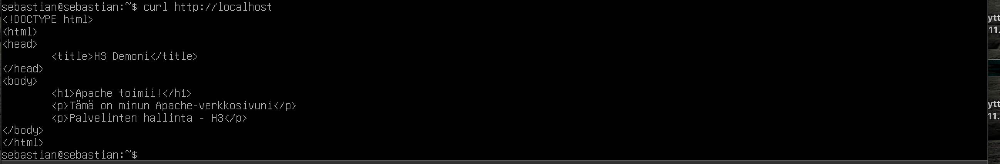
Seuraavaksi loin oman verkkosivuhakemiston ja HTML-tiedoston:
mkdir ~/publicsite
nano ~/publicsite/index.html
mkdir luo uuden hakemiston ja nano avaa tekstieditorin, jolla tiedostoa voidaan muokata. Tein index.html-tiedostoon yksinkertaisen verkkosivun, jossa oli otsikko ja tekstiä.
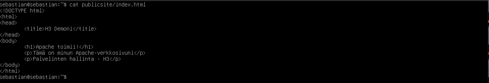
Jotta Apache näyttäisi oman verkkosivuni oletussivun sijasta, muokkasin Apachen oletussivuston asetustiedostoa:
sudo nano /etc/apache2/sites-available/000-default.conf
Muokkasin DocumentRoot-asetuksen osoittamaan omaan hakemistooni:
DocumentRoot /home/sebastian/publicsite
<Directory /home/sebastian/publicsite>
Require all granted
</Directory>
DocumentRoot määrittää hakemiston, josta Apache hakee verkkosivun tiedostot. Require all granted sallii verkkopalvelimen käyttää kyseistä hakemistoa.
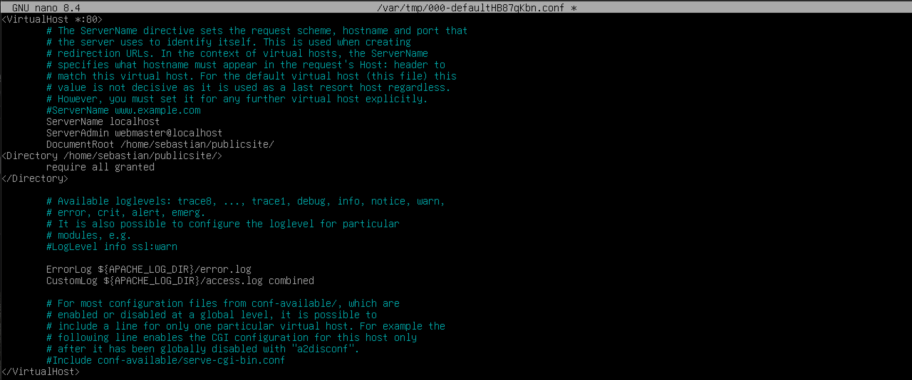
Tarkistin asetusten oikeellisuuden ennen palvelimen uudelleenkäynnistämistä:
sudo apache2ctl configtest
Komento tarkistaa Apachen asetustiedoston syntaksin. Tuloksena sain ilmoituksen Syntax OK, joten asetuksissa ei ollut havaittuja syntaksivirheitä.
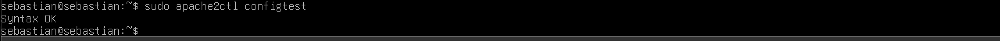
Seuraavaksi määritin hakemistojen ja tiedoston käyttöoikeudet:
chmod ugo+x /home/sebastian/
chmod ugo+x /home/sebastian/publicsite/
chmod ugo+r /home/sebastian/publicsite/index.html
chmod muuttaa tiedostojen ja hakemistojen käyttöoikeuksia. Hakemistoihin annettu x-oikeus mahdollistaa niiden läpi kulkemisen. HTML-tiedoston r-oikeus sallii sen lukemisen.
Tarkoituksena oli, että oma käyttäjäni pystyy muokkaamaan verkkosivua ilman sudo-oikeuksia ja Apache pystyy lukemaan sen sisällön.
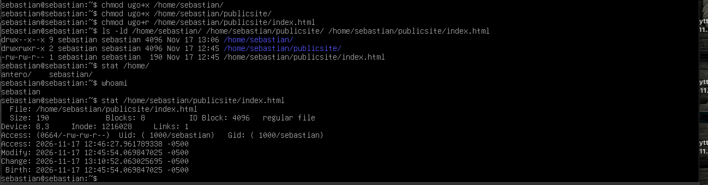
Lopuksi testasin verkkosivun toiminnan selaimella. VirtualBoxin NAT-verkkotilaan oli määritetty porttiohjaus, jonka avulla pääsin virtuaalikoneen web-palvelimelle Macin selaimesta osoitteella http://localhost:8080.
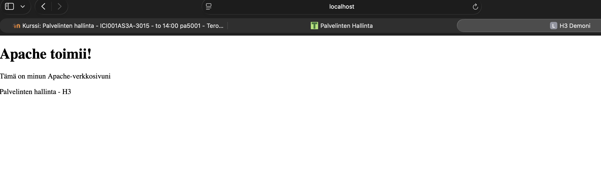
Toisessa tehtävässä asensin Nginx-web-palvelimen. Nginx on Apacheen verrattava web-palvelinohjelmisto, jolla voidaan julkaista verkkosivuja.
Ennen Nginxin asentamista pysäytin Apachen, koska molemmat palvelimet yrittäisivät käyttää samaa oletusporttia 80:
sudo systemctl stop apache2
systemctl stop pysäyttää määritetyn palvelun.
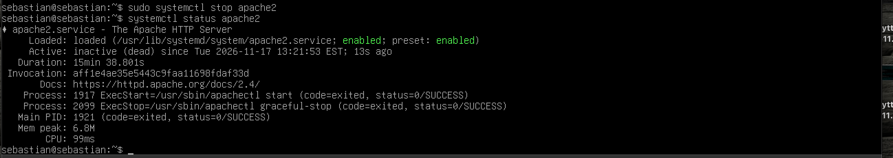
Asensin Nginxin seuraavilla komennoilla:
sudo apt update
sudo apt install nginx
Tämän jälkeen tarkistin Nginxin tilan:
systemctl status nginx
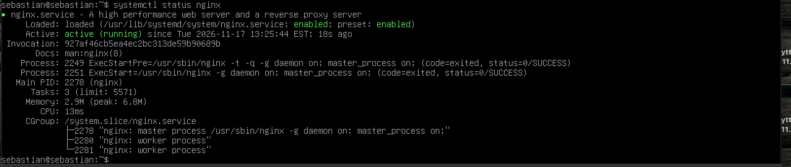
Seuraavaksi muokkasin Nginxin oletussivuston asetustiedostoa:
sudo nano /etc/nginx/sites-available/default
Etsin tiedostosta root-asetuksen ja vaihdoin sen osoittamaan aiemmin luomaani verkkosivuhakemistoon:
root /home/sebastian/publicsite;
root määrittää hakemiston, josta Nginx hakee verkkosivun tiedostot. Näin molemmat web-palvelimet käyttävät samaa HTML-tiedostoa.
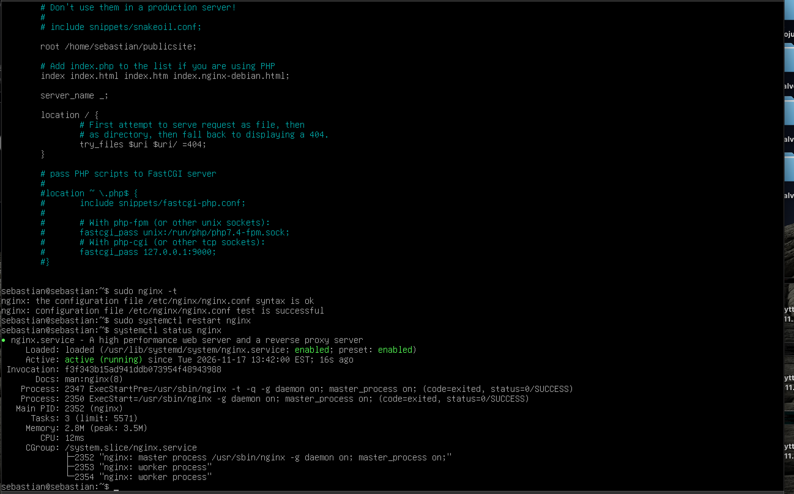
Tarkistin asetustiedoston syntaksin:
sudo nginx -t
Komento tarkistaa Nginxin asetukset ennen niiden käyttöönottoa. Tuloksena sain ilmoituksen, että syntaksi oli kunnossa ja testi onnistui.
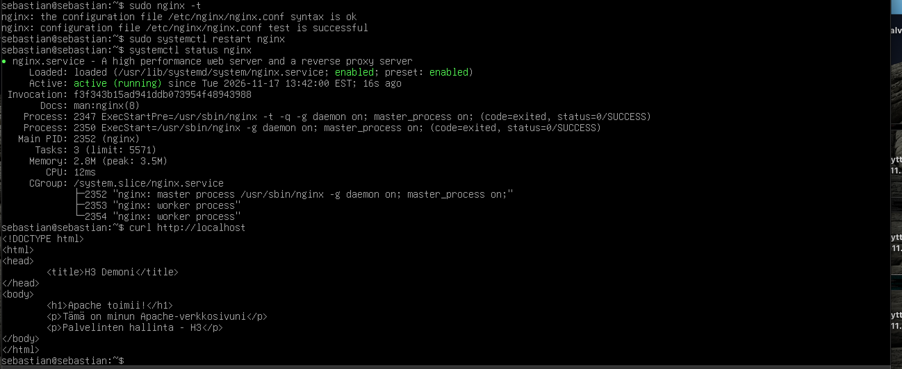
Tämän jälkeen varmistin, että Nginx oli käynnissä ja Apache pysäytettynä:
systemctl is-active nginx apache2
Komento tulosti Nginxin kohdalla active ja Apachen kohdalla inactive. Tämä varmisti, että Nginx oli käytössä ja Apache ei ollut käynnissä.
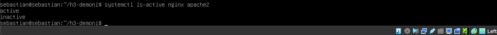
Testasin vielä verkkosivun toiminnan selaimella osoitteessa http://localhost:8080. Sivu avautui onnistuneesti myös Nginxin kautta. Tuli kuitenkin vielä apachen teksti ja en saanut sitä korjattua.
Kolmannessa tehtävässä automatisoin Nginxin asennuksen ja käynnistämisen Ansiblella. Ansiblella voidaan hallita Linux-palvelimia playbook-tiedostojen avulla. Playbook sisältää YAML-muodossa määritellyt tehtävät, jotka Ansible suorittaa järjestyksessä.
Loin tehtävää varten oman projektihakemiston:
mkdir ~/h3-demoni
cd ~/h3-demoni
mkdir luo projektihakemiston ja cd siirtyy siihen.
Loin projektihakemistoon inventaariotiedoston:
nano hosts.ini
Lisäsin tiedostoon seuraavan rivin:
localhost
Inventaario kertoo Ansibelle, mitä koneita hallitaan. Tässä tehtävässä käytin paikallista Debian-virtuaalikonetta, joten kohteena oli localhost.
Testasin yhteyden Ansiblella:
ansible all -m ping -i hosts.ini
Komennossa -m ping suorittaa Ansible-ping-moduulin ja -i hosts.ini määrittää käytettävän inventaariotiedoston. Tulokseksi sain SUCCESS ja pong, mikä osoitti, että Ansible pystyi suorittamaan tehtäviä paikallisella koneella.
Ansible-yhteyden testaaminen
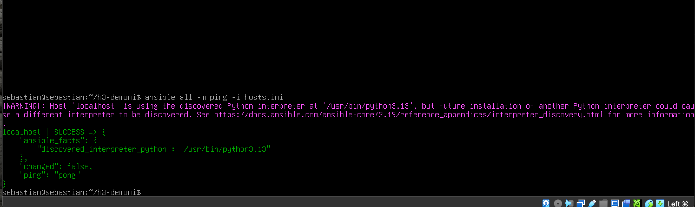
Tutustuin myös apt-moduulin dokumentaatioon:ansible-doc apt
Komento avaa apt-moduulin ohjeet. Sen avulla tarkistin, miten ohjelmistopaketteja hallitaan Ansiblella.
Seuraavaksi loin playbook-tiedoston:
nano site.yml
Kirjoitin tiedostoon seuraavan sisällön:
---
- name: Install and Start Nginx
hosts: localhost
become: yes
tasks:
- name: Install nginx
apt:
name: nginx
state: present
update_cache: yes
- name: Start and enable nginx
service:
name: nginx
state: started
enabled: yes
Playbookin alussa määritetään tehtävän nimi ja kohdekone. become: yes tarkoittaa, että Ansible suorittaa tehtävät ylläpitäjän oikeuksilla.
Ensimmäisessä tehtävässä käytetään apt-moduulia Nginxin asentamiseen. name: nginx määrittää asennettavan paketin, state: present varmistaa, että paketti on asennettuna ja update_cache: yes päivittää pakettivarastojen tiedot.
Toisessa tehtävässä käytetään service-moduulia. state: started varmistaa, että Nginx on käynnissä. enabled: yes puolestaan määrittää, että palvelu käynnistyy automaattisesti järjestelmän käynnistyessä.
site.yml-tiedoston sisältö
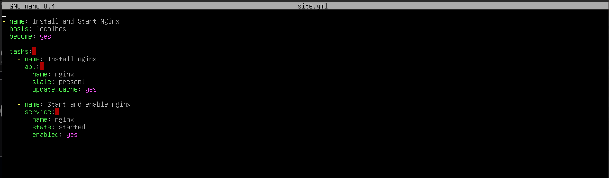
Tarkistin vielä service-moduulin dokumentaation:ansible-doc service
Komento avaa palveluiden hallintaan tarkoitetun moduulin ohjeet. Tutustuin erityisesti asetuksiin name, state ja enabled, joita käytin playbookissa.
Ennen playbookin suorittamista tarkistin YAML-tiedoston syntaksin:
ansible-playbook -i hosts.ini site.yml --syntax-check
--syntax-check tarkistaa playbookin rakenteen ja syntaksin suorittamatta varsinaisia tehtäviä. Komento ilmoitti, että playbook oli kunnossa.
Playbookin syntax-check
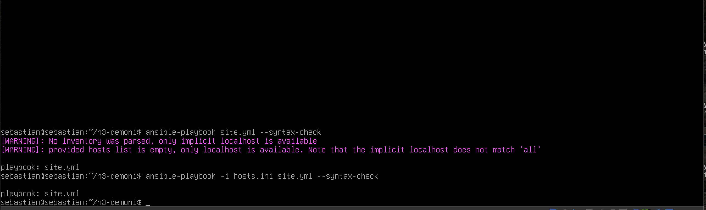
Suoritin playbookin seuraavalla komennolla:ansible-playbook -i hosts.ini site.yml --ask-become-pass
ansible-playbook käynnistää playbookin suorittamisen. --ask-become-pass pyytää ylläpitäjän salasanan, jotta Ansible voi suorittaa ylläpitoa vaativat tehtävät.
Playbook suoritti tehtävät onnistuneesti. Tulosteessa näkyi, että tehtävät onnistuivat eikä virheitä tullut. changed=0 tarkoitti tässä tapauksessa sitä, ettei järjestelmässä tarvinnut tehdä muutoksia, koska Nginx oli jo asennettu ja käynnissä edellisessä tehtävässä. Tämä on Ansiblen idempotenttisuuden tarkoitus: sama playbook voidaan suorittaa useita kertoja ilman tarpeettomia muutoksia.
Suorituksen yhteydessä näkyi myös Python-tulkin löytämiseen liittyvä varoitus. Se ei estänyt playbookin suorittamista.
Playbookin onnistunut suoritus
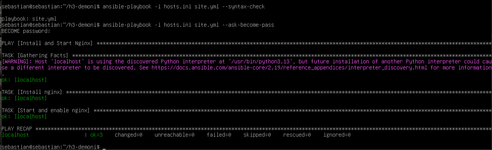
Lopuksi tarkistin vielä palveluiden tilat:systemctl is-active nginx apache2
Nginx oli aktiivinen ja Apache oli pysäytettynä. Avasin myös verkkosivun selaimessa ja varmistin, että se näkyi edelleen oikein.
Lopputilanne – Nginx aktiivinen, Apache inactive ja verkkosivu toimii
ansible-doc apt ja ansible-doc service.